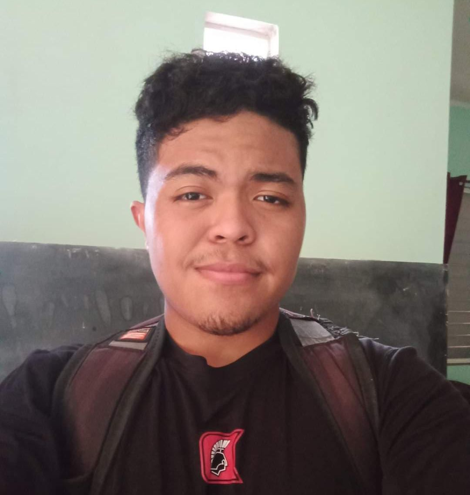

Objectives
To acquire valuable knowledge and skills to complement those that I have learned from school in an actual job environment. In return, I offer my service and determination to be an asset to your company throughout the duration of my employment.
Contact
Princess Diana Street+501 625-4777
tadeos.bennett@gmail.com
Orange Walk Town
Orange Walk District
Tadeo Bennett
Web Developer
My name is Tadeo Bennett. With my application of skills in web development and other web technologies, I am able to passionately design and implement beautiful, functional websites.
Education
- 2021 to Present - University Of Belize
- 2019 to 2021 - Corozal Junior College
- 2017 to 2019 - Muffles High school
- 2015 to 2017 - Toledo Community College
Skills
Coding Skills
- HTML
- CSS
- JavaScript
- PHP
- MySQL
- GitHub
- NodeJS
- VueJS
- Quasar
- Google FireBase Hosting
Practical Skills
Aug 20 - Nov 26 University of Belize Hackathon Practical Experience.
Soft skills
- Team work
- During my 3 years of school, we have worked on various team assignments. I have gained the skills that have allowed me to work as a team player, and to engage in productive collaboration with my peers.
- Problem Solving
- Due to my knowledge in the field and ability to search and reflect on information, I am efficient in finding solutions to pressing problems. My persistence, as well as my ability to tackle situations from many angles is a plus to my problem-solving skills.
- Work-Ethic
- I put pride into the work that I do and the output that I produce, both as a team and my personal endeavors. My peers would describe me as a responsible and dependable individual that always goes the extra mile to achieve something.
Reference
Kieran Ryan - University of Belize